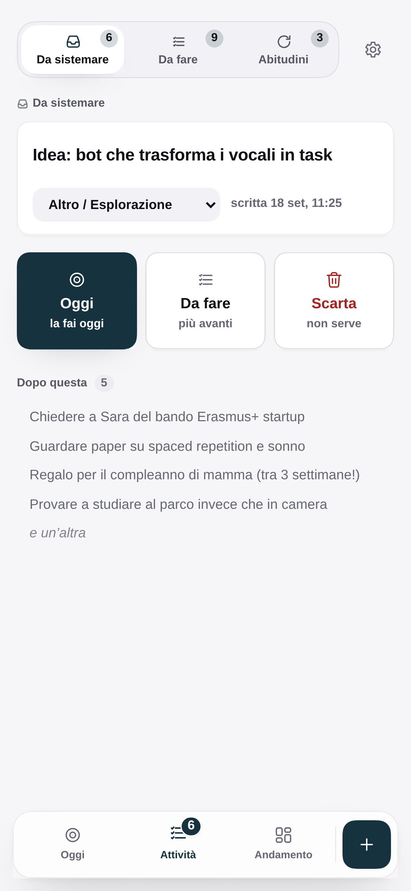
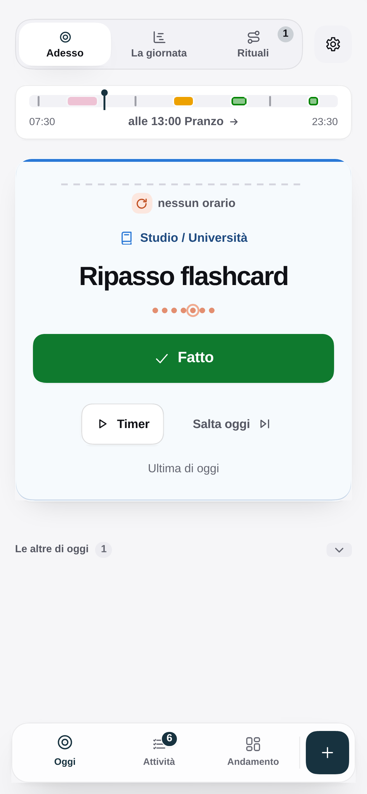
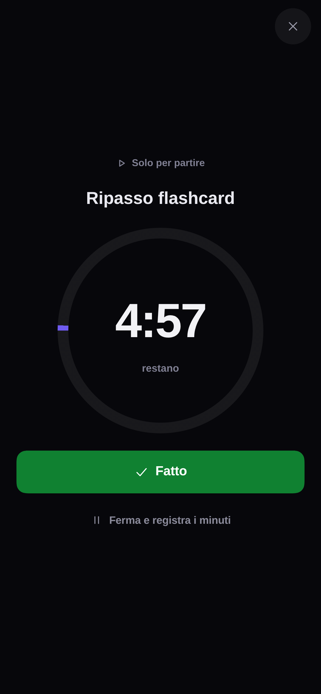
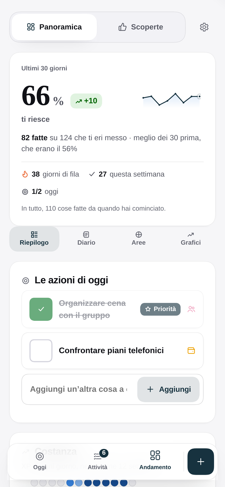

Il problema non è la lista.
È decidere da dove cominciare.

LifeMax ne sceglie una.
E ti fa vedere solo quella.

Il difficile è iniziare.
Cinque minuti. Poi va avanti da solo.

Dopo un mese sai cosa funziona.
Sui tuoi dati, non sulle medie di altri.

LifeMax
Una cosa alla volta.